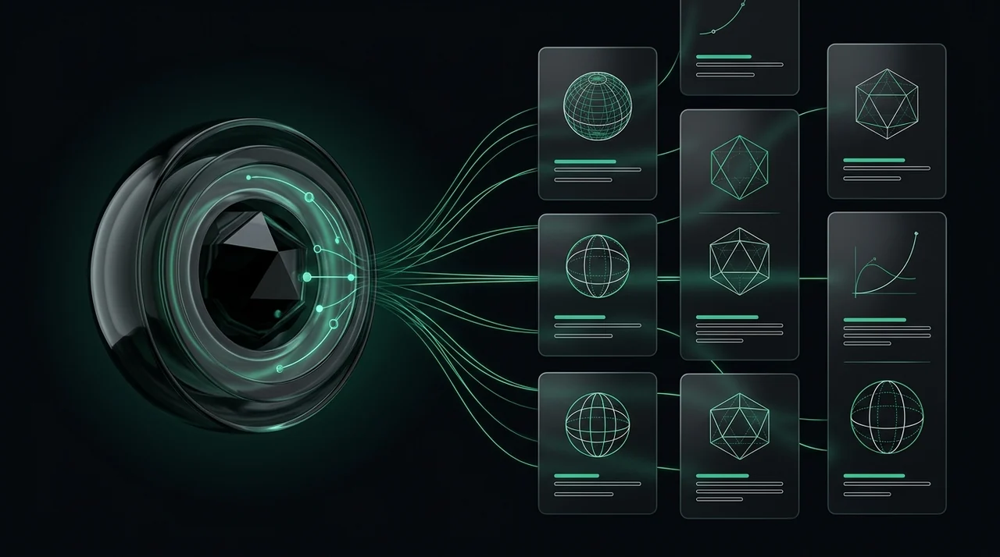

PILLAR 01 · AI-NATIVE ARCHITECTURE
接进你的 AI Agent，一句话自动控软录题
题有据天生面向 AI Agent 设计，安装即自带 tiyouju Skill 与 MCP 服务，可直接接入 Claude Code、Cursor、Codex 等支持本机命令或 MCP 的助手。把整份试卷或教辅交给 Agent，自动完成看图探查、精准切题、公式直录与章节归档；已入库题卡则走「助手工作台」提案人审，AI 干重活，拍板权始终在你手里。
tiyouju skill
tiyouju mcp
tiyouju cut
tiyouju folders apply-tree
